Recursive refinement
A shared refinement operator learned from paired coarse-to-fine representations is reused to synthesize geometry beyond the training resolutions, without paired supervision at the target resolutions.
Efficient Global-Local Recursive Refinement for Extremely Detailed 3D Geometry Generation
Drag to rotate · scroll to zoom · click the model to fly in · numbered spots load full-resolution geometry · double-click to reset
Efficiency at every level, whole-object comparisons with TRELLIS.2, Hunyuan3D-2.1, Pixal3D and UltraShape turning in sync, and close-ups at high magnification.
High-resolution images contain rich visual details that require fine geometric structures for faithful 3D reconstruction. However, generating extremely detailed 3D geometry from images requires substantial computational resources and training data, making high-resolution geometry generation challenging for existing state-of-the-art models. In this paper, we present SuperFine3D, an efficient framework for generating extremely detailed 3D geometry through global-local recursive refinement. SuperFine3D learns a shared refinement operator from paired coarse-to-fine representations and recursively reuses it to progressively synthesize finer geometry beyond the training resolutions, without requiring additional paired supervision at target resolutions. To make recursive refinement computationally efficient, we introduce spatial-cell attention, which restricts high-resolution interactions to local spatial neighborhoods while maintaining bounded communication across neighboring cells. We further propose spatially anchored cross-scale guidance, which leverages globally contextualized coarse geometry to guide local detail synthesis and preserve structural consistency. In addition, geometry-aware training objectives encourage the refinement process to preserve stable geometric structures while introducing fine-grained surface details. Experiments demonstrate that SuperFine3D generates geometry at a 40963 decoder-grid resolution, corresponding to a sparse 2563 latent lattice, using a shared refinement operator trained only on 5123–10243 representations. Compared with a full-attention recursive baseline, SuperFine3D achieves a 9.4× speedup in end-to-end inference and reduces peak GPU memory usage by 23.0%, while improving cross-scale structural consistency and producing cleaner surfaces with finer geometric details.
A pretrained generator produces a coarse 5123 shape, from which the input camera is estimated. At every level, detail normals estimated from the input image are injected into the current mesh; the corrected mesh is encoded at twice the resolution, partially noised, and refined by the shared refinement network conditioned on the preceding latent and the image.
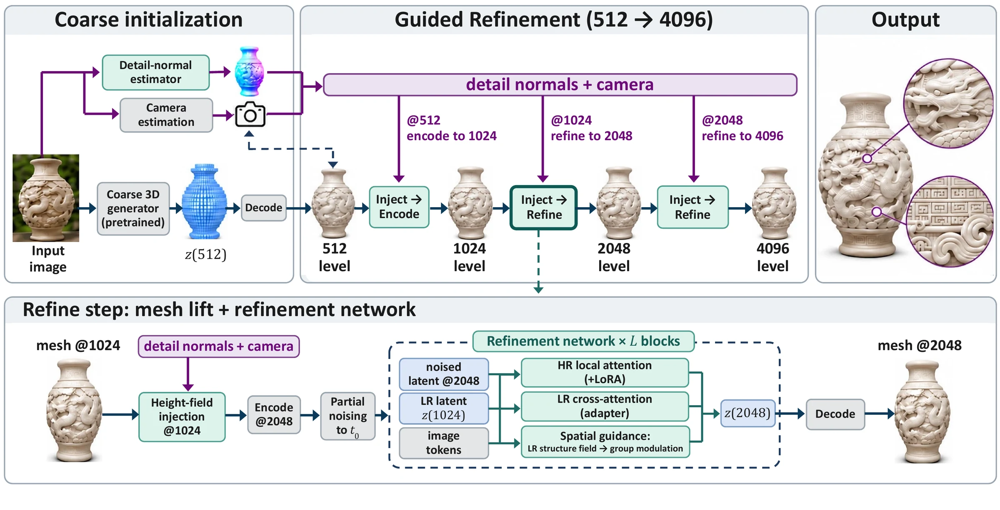
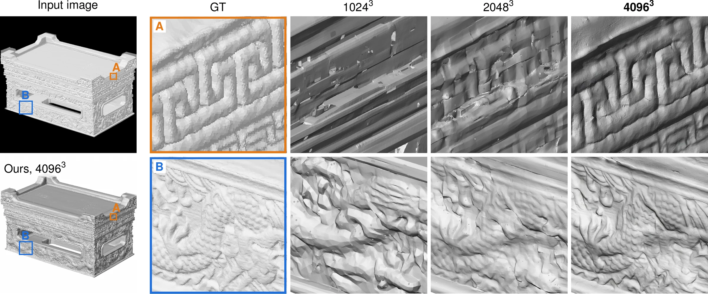
A shared refinement operator learned from paired coarse-to-fine representations is reused to synthesize geometry beyond the training resolutions, without paired supervision at the target resolutions.
High-resolution interactions are restricted to local spatial neighborhoods while bounded communication across neighboring cells is maintained.
Spatially anchored guidance from globally contextualized coarse geometry steers local detail synthesis and preserves structural consistency.
Objectives on the decoded geometry keep stable structures unchanged and introduce fine-grained surface detail where the target changes.
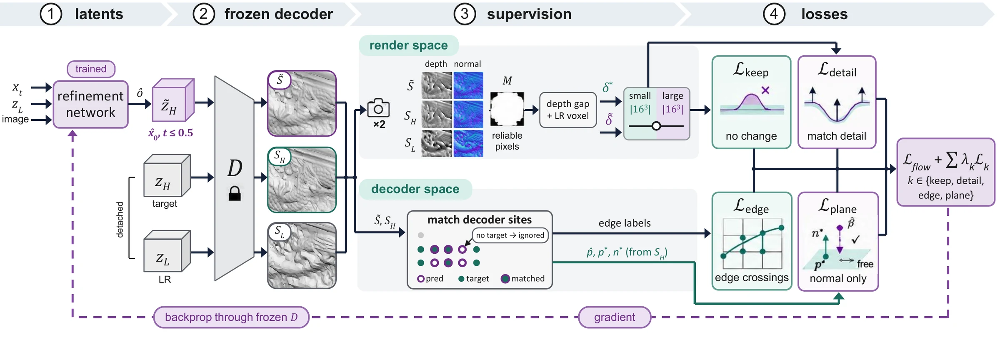
Inputs are 4096 px images generated with Nano Banana Pro, identical for all methods.
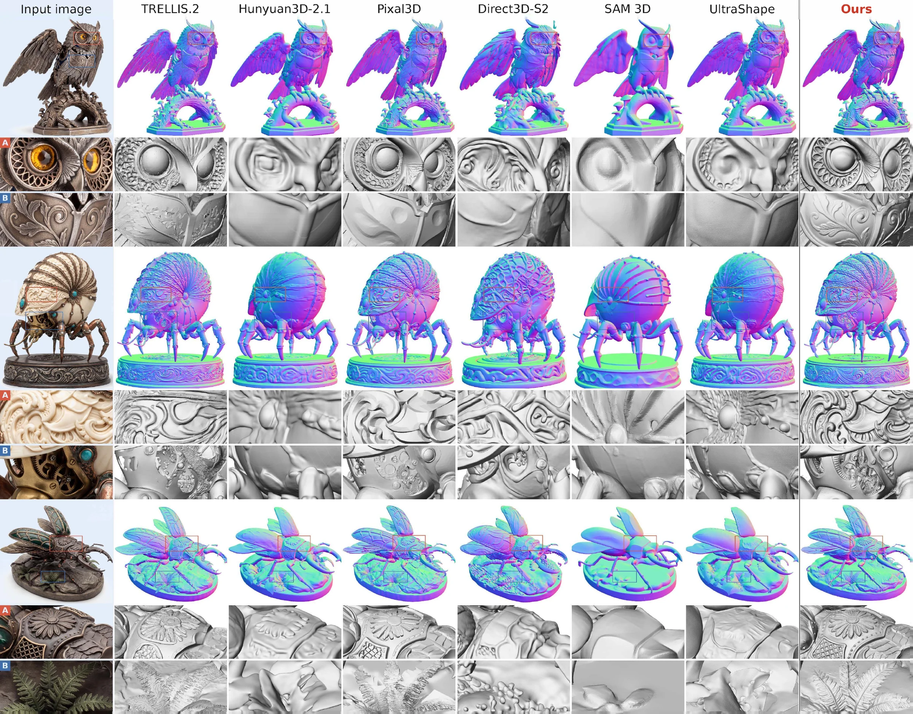
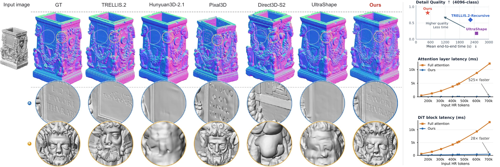
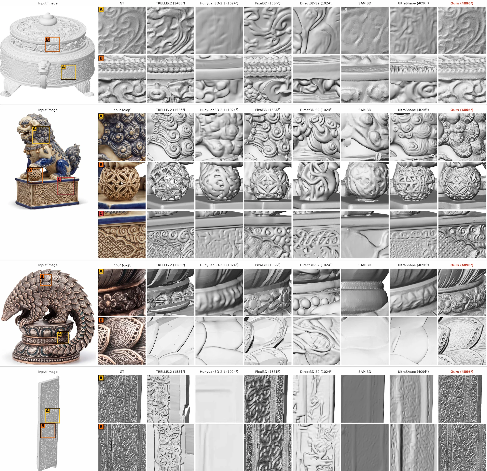
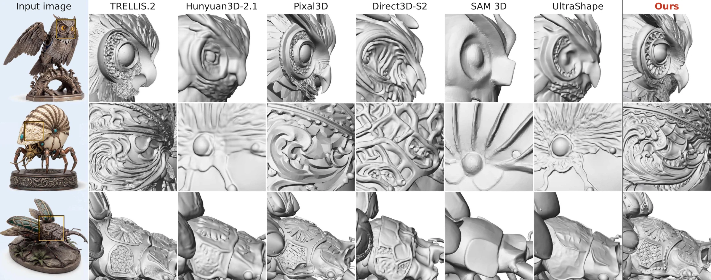
Grain stripes, dark patina and painted patterns stay in the image; carved relief goes into the geometry.
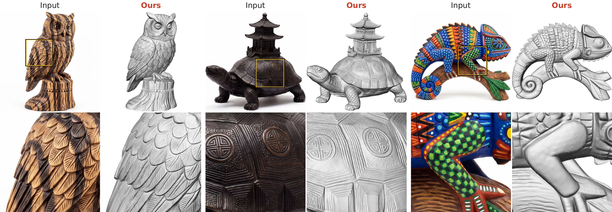
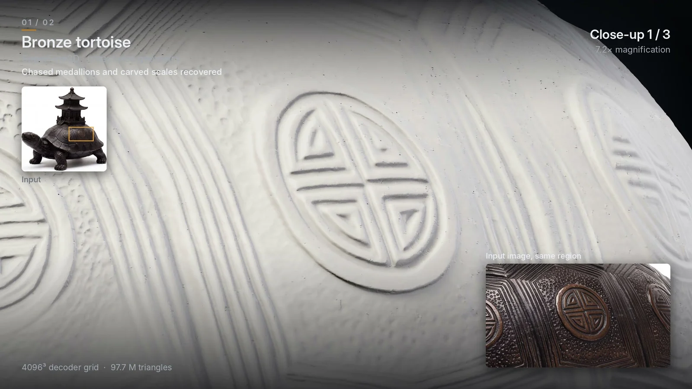
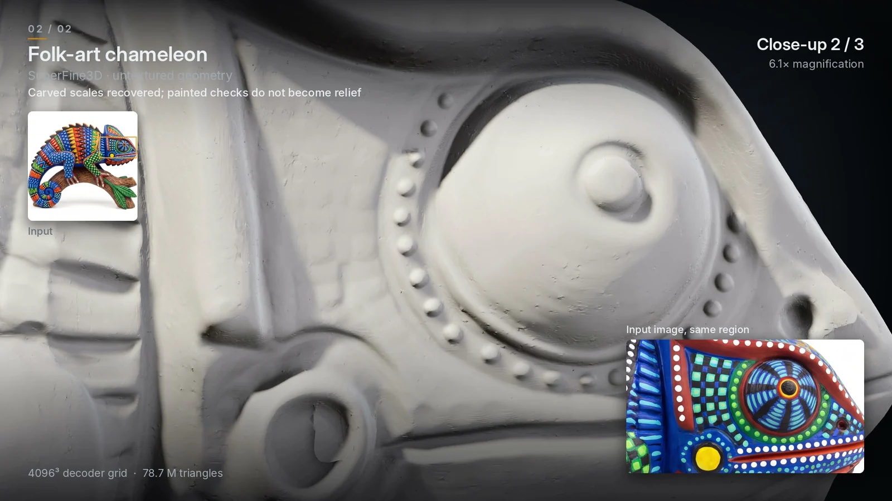
With the same pipeline, a second input view resolves what a single view cannot see.
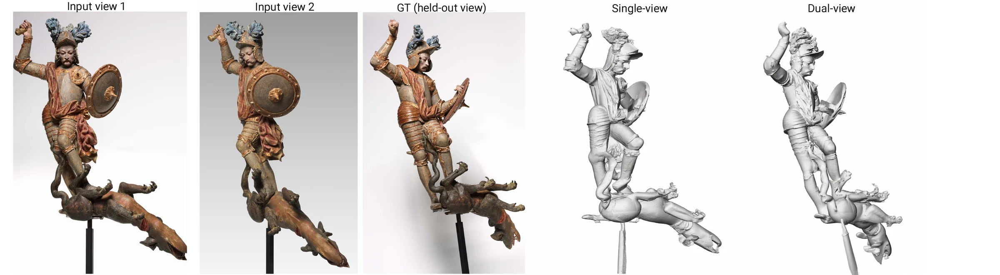
Geometric quality on Toys4K. Distances are scaled by 103; F-scores are percentages. Corr: image-space normal correlation in the 4–16 px and 16–64 px bands.
| Method | Res. | CD-L1 ↓ | Ang. (°) ↓ | F@0.002 ↑ | DQ ↑ | Corr 4–16 ↑ | Corr 16–64 ↑ |
|---|---|---|---|---|---|---|---|
| TRELLIS.2 | 1536 | 15.711 | 35.40 | 17.075 | 0.5444 | 0.002 | 0.105 |
| Hunyuan3D-2.1 | 1024 | 16.115 | 38.42 | 14.204 | 0.3680 | 0.006 | 0.110 |
| Pixal3D | 1536 | 17.761 | 33.70 | 14.197 | 0.5319 | 0.038 | 0.268 |
| UltraShape | 4096 | 17.381 | 35.76 | 12.083 | 0.1708 | 0.014 | 0.166 |
| SuperFine3D | 2048 | 15.639 | 27.44 | 17.107 | 0.5957 | 0.364 | 0.501 |
| SuperFine3D | 4096 | 15.660 | 27.46 | 17.123 | 0.6474 | 0.368 | 0.518 |
Latency of the first DiT block on eight assets spanning 143,440–708,592 HR tokens: identical HR coordinates, noise, image conditioning, batch size one and BF16 on the same GPU; median of nine synchronized measurements.
@misc{li2026superfine3d,
title = {SuperFine3D: Efficient Global-Local Recursive Refinement
for Extremely Detailed 3D Geometry Generation},
author = {Li, Lihan and Zhou, Junwei and Tai, Yu-Wing},
year = {2026},
eprint = {2611.29630},
archivePrefix = {arXiv},
primaryClass = {cs.CV},
url = {https://arxiv.org/abs/2611.29630}
}